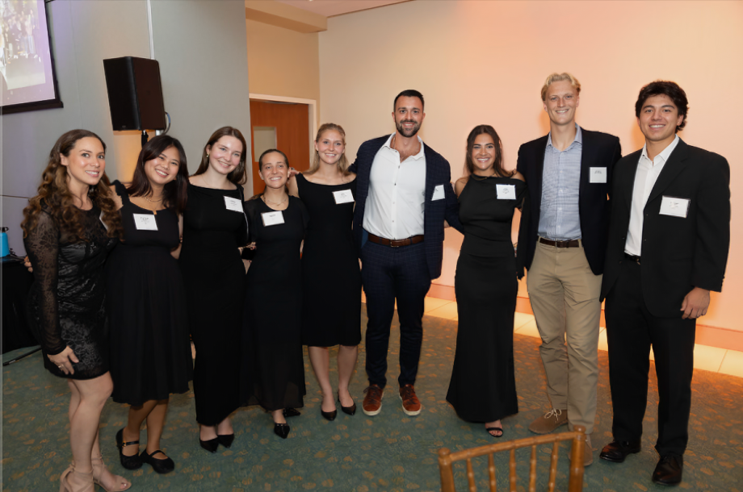
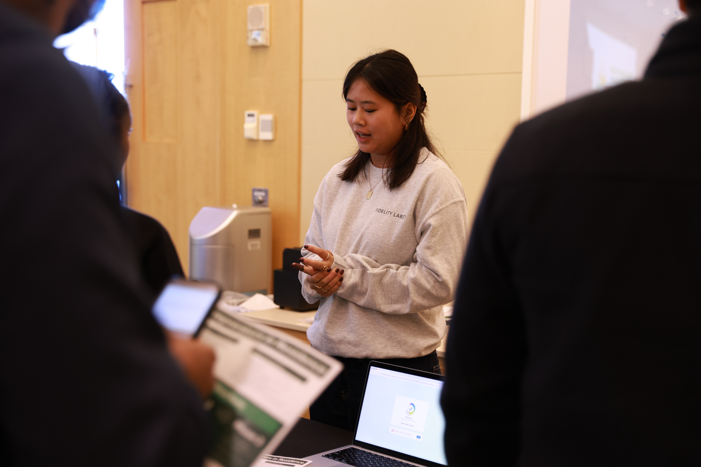
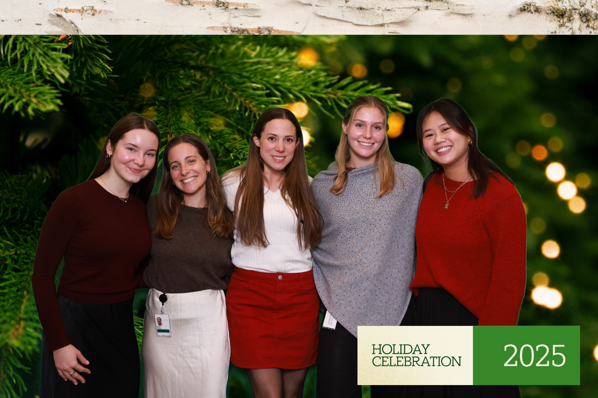

One of the best parts of being a Northeastern student is the co-op program, and this past December I wrapped up my second one — as a Communications Associate at Fidelity Investments, specifically within their startup incubator unit, Fidelity Labs. The experience introduced me to a lot of exciting things: go-to-market strategies, large-scale networking events, the inner workings of a major financial institution and the incredibly talented people who work there.

My role was genuinely multifaceted — writing native LinkedIn posts, building slide decks, coordinating events and managing both internal and external communications. Being embedded in a startup incubator meant I got to watch businesses at completely different stages of development, from mature, in-market companies to brand-new ideas still working through their go-to-market plan. It grew my understanding of the startup world in a way that felt tangible and real.

The highlight of the whole co-op was Fidelity Labs' Demo Day and 20th Anniversary Celebration. I wrote about the event itself here, but this is the behind-the-scenes version. My team had been preparing since I joined in July, so it was the biggest project I got to be a part of. We collaborated with all of our portfolio businesses and Fidelity internal partners to pull both events together. I helped build presentation decks, order swag, create informational one-pagers and coordinate an online challenge open to all attendees. Being on the team that made it happen — not just watching it — was something I won't forget.

This co-op confirmed what I had already started to feel — that communications and event work is where I want to be. I'm grateful for everything Fidelity Labs showed me, and I can't wait to bring it into whatever comes next.